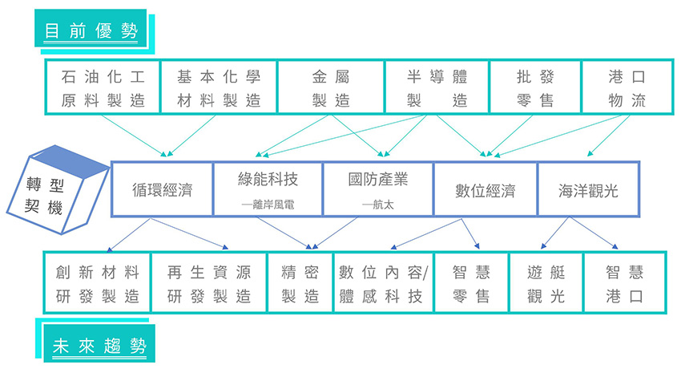

專家看高雄
疫情後˙高雄產業園區的創新與轉型
高雄為傳統製造業重鎮，產業園區的發展從傳統製造業園區（經濟部開發的工業區及加工出口區、高雄市政府主導的岡山本洲產業園區 、和發產業園區等），到近期以科技產業為主的園區發展(橋頭科學園區、體感科技園區等)，朝向建構光電、半導體、精密機械及生技產業聚落，打造高雄成為科技創新基地，帶動高雄產業轉型與升級發展。
然而，面對後疫情之生產供應鏈變化挑戰，以及跨領域創新打造產業新利基的大環境趨勢，如何因應推動產業園區並提前做好產業布局，以及協助園區廠商垂直整合、跨域合作，以及開創智慧應用與服務等，均值得加以探討。本次透過專家學者從不同面向或領域提供高雄產業園區創新轉型方向觀點與建言，期有助於高雄產業創新、升級與轉型，持續保有競爭力，進而帶動高雄社經發展。
當傳統產業邁向高值化

高雄由1974年重化工業時期，快速帶動高雄相關產業發展，成為石化、鋼鐵、造船等重工業的重要基地；1982年進入策略性工業時期，選定電機、機械、電子器材、運輸工具（汽車零件、金屬製造）為策略性工業；接續至2000年的高科技、產業創新及全球布局時期，加工出口區從勞力密集的製造業，逐步轉型為技術密集的LED、太陽光電、半導體封測、水處理設備等高科技產業，並引進商務會展、倉儲物流、軟體等。
高雄以傳統產業居多，從北至南有各種不同屬性的工業產業聚落，例如北高雄的金屬扣件、光電半導體；中高雄的金屬模具、金屬加工；南高雄的鋼鐵、石化等，產業園區是區域的經濟引擎，除了創造產值更能吸引就業。
產業轉變 x 跨域發展
高雄整體的產業形貌以金屬加工為主，近年傳統產業努力往高值化的方向推展，如藉由高附加價值、高級金屬材料為原料，帶動金屬產業產值效益的提升，以及精密機械零件加工製造廠朝向研發航太零配件等。
- 例如扣件產業，積極朝向發展人工牙根、骨釘骨板等，並由此跨入醫材相關領域，且金屬材料產業也是民生、工業用途產品等不可或缺的材料，可廣泛應用於包含機械設備、模具、醫療器材、電子零組件，以及運輸工具等產業。
- 例如車輛鈑金、切削的業者，現在則轉往航太方面發展，其中包含像晟田科技、駐龍精密機械等，南台灣一直是國內航太發動機生產重鎮，目前有南科管理局自2017年起推動為期4年的「南科航太關鍵系統技術升級推動計畫」，積極輔導廠商投入開發航太關鍵技術能量。
全台最先進、最完整的航太產業聚落，就在高雄
- 仁武產業園區已於去(2019)年3月通過都市計畫變更，使高雄既有關聯業者形成完整的航太產業聚落，預計可吸引213億元投資額，創造6,300個就業機會。
- PRI(美國航太品質評審協會)年會將於今(2020)年9月在高雄舉辦，此為PRI年會首次在臺灣舉辦。
- 高雄市為打造高雄成為航太零件之都，並已連續3年邀請國際認證的NADCAP官方講師來台授課，業者方面計有駐龍、公準、漢翔、晟田、朝宇、嘉華盛、穎明等高雄廠商參與。
延伸資訊
找出痛點 穩定的訂單?市場?
智慧化的推動主要是希望以精密機械推動成果，以及原有資通訊科技能量為基礎導入智慧化相關技術，但目前中小企業較多是投資在自動化的部分，透過自動化使整體稼動率提升。由此，在協助傳統產業智慧化方面，建議可從協助業者找出痛點開始，進一步協助業者產能提升及品質提升。
傳統產業在投資上較為謹慎，若中小企業老闆無法清楚了解產能、稼動率、或者品質上的瓶頸在哪裡，則不敢將有限資源進行投資；當業者無法看到未來有持續性的訂單時，也是同樣情形。舉例來說，工廠的產能為10萬件，突然有一個大訂單100萬件進來，業者可能不敢接單，因為接單後，未來無法確認持續會有同樣規模的訂單，若為了這100萬件的訂單進行投資，這樣在投資回收上就產生問題。政府若能協助中小企業獲得穩定的訂單，當訂單穩定，則中小企業相對就敢進行投資。或許某種程度而言，爭取穩定的訂單應該是企業本身要做的，但政府的協助可進一步促成業者願意加強投資以增進產業能量。
市場對業者而言也非常重要，例如部分扣件業者，成立通路公司的方式，以這個通路公司對外爭取訂單，取得訂單之後再進行分配，這樣在接單時就能更積極爭取。因為若是單一公司洽接訂單，當訂單需求是100萬件，而業者能力僅能產出50萬件，此時若業者有聯盟的合作關係，則會較敢於接這100萬件的訂單，這也是過去扣件廠以共同集資成立通路商，用共同接單共同分配的概念。這概念雖屬公司的營運方式，但從政府的角度也可以此作法為方向來協助業者。
高雄有很多隱形冠軍，在企業經營及技術研發方面都很優秀，但目前普遍面臨的是SOP 建立的能量較為缺乏，即將製程系統性文件化的能力較為不足。例如，國外廠商通常會提問臺灣業者「你說你做得很好，是否能夠提出你能做的這麼好的原因?」，但臺灣傳統產業業者通常是憑藉過去多年的經驗累積，無法很明確描述是經過何種測試的過程得到的結果。國際廠商因為要確認良率及品質，使能在交貨時讓顧客可以完全信任，因此需要對製造過程了解得很清楚。對於技術開發的歷程及生產的歷程都需要能明確說明清楚，這部分是國內廠商要提升整體的競爭力及戰鬥力需要努力的。
產業共創 x 平台價值
以產業共組平台共創產業價值，將製造廠商都整合在一個平台，透過平台協助業者至國外接單，接單後視業者能量及品質，在價格和交貨時間等條件兼具下，進行分單。
- 在平台架構上，將客戶端分為A、B、C、D級，級別代表不同產業領域，如航太領域、車輛領域等，同樣業者端也分類，推動之後若原來做D級領域的業者，後來想轉做A級，此平台因為清楚知道業者的能力及問題在哪裡，則可以協助及輔導業者，讓業者也可以做A 級領域，未來可以在平台中做這件事情，而不是廠商單打獨鬥，而且在平台中可以很清楚地讓業者知道，你只要提升甚麼樣的能量、提升到甚麼地步、引進甚麼樣的智慧化或自動化的能量，則每個月產能可由10萬件提升到100萬件之類，這樣一來，企業產能可以提升且能預見訂單就較敢投資。
- 在市場資訊分享上，業者雖然都很積極努力，但通常是自己或周遭幾個同領域的朋友的資訊來源在做決策，有些大規模的公司資訊來源較多，而中小企業則資訊來源相對有限，但又因台灣以中小企業居多，彼此間具有競爭性的關係，所以若要共同分享資訊是有困難的，因此，政府可以扮演什麼角色能夠讓這些中小企業，大家共同能夠來打群架，這是政府可以思考的方向，而透過上述平台的運作，將可讓業者獲取充分的資訊。
創造對談 x 跨領域、跨地域
以公私夥伴關係(Public-Private Partnership, PPP)而言，應該要找到策略方向正確、有遠見的公司，讓這個產業成為類似領頭羊的角色，搭配政府也有很清楚的政策方向及協助支援相關建設，學研界也共同支持。
建議政府可以協助創造一個產官學研的價值共創平台，使更多對談在平台上產生，創造環境讓更多人可以在平台裡面進行資訊交流及提出需求議題，並納入不同領域的人在平台中，透過對談的形式創造出可能的新價值與新商機。透過規劃建立跨領域、跨地域的對談平台，在平台裡大家可以共同尋找商機及合作，例如因應疫情而產生的研發需求訊息為例，需求者可以把因疫情而有何種需求，或者需要什麼新的產品開發，將議題丟在平台上，此時國外業者會提出這議題它可以做甚麼，臺灣的業者也提出依它的能量可以做哪個部分，或是有研發單位提出相關作法，這樣就形成一個團隊的合作，以跨領域及跨國的合作共同來打國際市場。
- 首先，找出具在地有優勢、有機會的產業。以高雄目前的產業能量，找出一個具優勢及未來潛力的新的產業，藉由中央與地方政府的力量提供足夠的環境支持，是在臺灣及全世界都可以成立的產業。
- 高雄以傳統產業居多，而傳統產業在面臨投資或大轉型上相對謹慎，因此可思考，如何讓業者能看到一個很不錯的轉型的方向。另外，高雄在吸引人才方面較為困難，因為平均工資相對臺北較低，且在談AR、VR、產業數位化，需要整體配套的環境存在，所以，高雄發展IT產業或者軟體，可與高雄的製造業做很好的結合，在相關做法及配套上都可以先設計妥善。
- 建議先定義出未來希望在高雄成功的產業面貌，以及要再更突飛猛進的產業有哪些，可能是現有產業，也可能是新的產業，然後有幾個重要、關鍵的業者願意挺身主導，不是消極的配合政府政策，是業者本身就明確要朝這方向發展，而且是很積極、很有心，是公司原本就訂定的策略方向，只要業者願意站出來，加上政府及學研單位共同支援，這樣才有機會成功。
跨域創新x產業轉型


以高雄主要產業與園區轉型為論述主軸，分別以「高雄製造為基礎的產業轉型」及「高雄新興產業發展」等兩大面向，探討後疫情時代的高雄產業轉型契機。
過去政府基於國家產業結構升級和基礎產業自足的政策考量，協助高雄朝鋼鐵、石化和造船等基礎工業進行產業發展，發展至今，高雄優勢產業涵蓋石油化工原料製造、基本化學材料製造、金屬製造、半導體製造等製造業；批發零售、港口物流等服務業。中央相關產業政策的發展帶來轉型契機，例如「5+2產業創新計畫」，以及海洋委員會的成立等。高雄兩大轉型發展契機：一是製造為基礎的產業轉型策略（創新材料研發製造、再生資源研發製造、精密製造），二是以新興產業發展策略（數位內容/體感科技、智慧零售、遊艇觀光、智慧港口），可參見下圖。

資料來源：作者繪製註：海洋委員會是中華民國政府的中央行政機關，隸屬於行政院，2018年4月28日成立。負責中華民國總體海洋政策、海域安全、海岸管理、海洋保育及永續發展、海洋科技研究與海洋文教政策。是第一個設立在南台灣的中央部會單位，地點位在高雄軟體園區內。
遇見高雄產業轉型新樣貌
近期中央投入的重大建設－海洋科技產業創新專區（簡稱海洋專區）、循環技術暨材料創新研發專區、新材料循環產業園區、橋頭科學園區（科技部主導）為高雄未來產業發展的核心，驅動既有工業區的傳統製造業邁向轉型。以金屬製造為例，高雄發展離岸風電及航太產業，帶動更多樣且更精密的金屬製品製造需求（如入水下基礎、塔架、風機零組件製造等），藉此驅動既有金屬製造產業的升級，並進一步以海洋專區帶動新興產業及新創發展，包括：提供離岸風電基礎設施維運人才培育訓練場域、推動水下產品驗證、以水下無人載具的發展帶動新創企業。
在數位經濟發展上，繼高雄軟體園區之後，中央和地方政府分別建設體感科技園區、高雄智慧科技創新園區（簡稱KO-IN智高點），以帶動軟體、數位內容業者和科技新創的發展；另外橋頭科學園區（日月光、智崴皆為簽約進駐旗艦型廠商），致力於引進下一世代5G、AI等新興產業，扮演科技研發與帶動產業智慧化的重要角色。在前瞻基礎建設「體感科技基地—體感園區計畫（2018年至2021年）」支持下，協助體感科技產業落地高雄亞洲新灣區，體感科技帶來的沉浸式體驗為重要發展主軸。高雄體感中心「KOSMOS」，設立「前店」KOSMOSPOT「奇點站」和「後廠」KOSMOS HATCH「奇點艙」，前者由高雄市政府、HTC和資策會合作建置，提供AR、VR等體感樂園；後者則由經濟部和高雄市政府等單位合作成立的產業推展辦公室、商務支援中心和創新育成服務空間。在業者的主題試煉上，已建構場域示範案例，例如智崴結合VR、線上遊戲、電子競技三大元素，發展體感VR遊戲新應用等。綜合來看，跨領域整合與場域應用為高雄數位內容產業未來發展關鍵。
在海洋文化體驗觀光方面，從延伸的價值鏈與創新角度切入思考海洋/遊艇產業，廣義的遊艇產業，包含製造業、亞洲展售中心和海洋休閒服務業，「亞洲新灣區」為結合產業經濟（涵蓋上述體感科技）、文化、觀光面向的重要場域，其中高雄港埠旅運中心為海洋觀光的重要起點，同時會展產業與流行音樂產業都將為高雄帶來商務活動及旅遊觀光的人潮。
製造業轉型方向x智慧製造、關燈工廠
後疫情時代，製造業存在分散生產的需求，即未來智慧製造朝向自動化、彈性製造、多元供應等主軸。高雄橋頭科學園區規劃引進半導體、航太產業、智慧生醫、智慧機械及創新科技等產業聚落，建議智慧製造/關燈工廠可做為後疫情時代橋頭科學園區的產業發展重點主軸。
產業鏈需要有「定錨企業」（anchor firm）作為領頭羊，凝聚推力，以形成逐步擴散的漣漪效應。日月光目前在高雄已打造近10座高階製程關燈工廠，2020年底目標達到15座。日月光關燈工廠集中在高雄廠區，以高階製程為主，應用範圍廣泛，涉及物聯網、高速運算、人工智慧、應用處理器、車用、醫療、車用等領域。呼應前述討論，日月光橋頭科學園區廠預計以高附加價值、低耗能、低污染的智慧工廠為主，生產車用、消費用，以及5G、AI等相關應用領域產品。
製造業仍是高雄產業發展不可或缺的經濟動能，在既有由高雄定錨企業引領的智慧工廠/關燈工廠發展趨勢下，疫情更加乘帶動智慧製造與自動化的需求，為後疫情時代高雄製造業數位轉型的重要方向。
服務業轉型方向 x AR、VR、MR
根據勤業眾信（2020）指出，疫情使得宅經濟熱潮升溫，影片、遊戲等線上串流需求將增加20%~70%，擴大內容傳遞網路（Content Delivery Network, CDN）的需求，「非接觸型經濟」AR/VR/MR體感類型平台模式的成長為後疫情時代發展主軸，亦可作為高雄軟體園區與體感科技園區的重要切入契機。尤其數位內容、體感科技的範疇與內涵持續演進，需以較寬廣的創新視野，發想高軟園區及相關領域的未來，這包括：產業範疇、創新範疇、實證場域範疇，甚至於意味著產業政策內涵的改變。而且，高軟園區及高雄市的發展需將國內外投資與消費力積極引入和經營。
中央唯一指定推動體感產業重點城市 - 高雄！
- 高雄市自107年起以KOSMOS為行動代號，建立全臺唯一體感產業顧問、媒合平臺，協助創新團隊對接試煉場域、商務拓展、人才媒合及開拓國際市場。
- 今(109)年6月辦理「2020 KO-IN 未來城邦-創新創業大賽」，導入技術實證機制，並透過與國內外知名加速器包括臺灣最新型加速器(TAcc+)、中科智慧機器人自造基地加速器(AI Robotics Hub)、邁特電子企業股份有限公司(Mighty Net)、盛宇創新股份有限公司(Rainmaking Innovation)、玉山國際加速器有限公司(Mosaic Venture Lab)等合作，協助新創團隊科技育成、創業孵化、國際合作與投資，獲得熱烈迴響。
延伸資訊
以位在高雄軟體園區的智崴為例，從以數位遊戲、動畫與數位學習為主軸的發展，到整合開發軟、硬體設備及技術，甚至是作為SI廠商，整合跨領域（建立體感產業的生態系，整合基礎機械、多媒體、工業藝術等），進而達到海外連結/統包解決方案輸出（如與日本講談社內容業者的合作；出口到加拿大、日本、美國、中國大陸、西班牙、德國、荷蘭、澳洲、冰島等）；訴求透過體感科技中心/體驗平台，作為遊樂產業經營者（包括在高雄、荷蘭、臺北、北京、東京等），甚至是與電競和遊戲軟體產業結合，走向電競體驗中心。智崴數位轉型的路徑，從強化整合上游業者，進而串連到下游業者，並強調價值鏈定位上的轉換，從遊樂設備供應商到遊樂產業經營者，即場域平台化的經營模式，未來的發展模式為體感科技體驗中心，甚至是邁向電競體驗中心。
人工智慧的科技火花

近年受美中貿易戰及科技戰影響，造成全球產業供應鏈重組，加上今(2020)年初新冠病毒疫情的大爆發，帶來經濟活動萎縮、生產停工等衝擊，陸續有許多廠商回到臺灣進行投資或擴增產線，且5G 通訊、人工智慧、高效能運算等技術，亦呈穩定發展之姿。
當傳統製造業遇上人工智慧
高雄以傳統製造業為主，高雄產業園區可善用本身高雄製造為基礎的優勢，在近期全球經濟活動逐步重啟，以及製造業生產活動逐漸增加之際，藉由導入人工智慧以加速產業轉型。
AI科技應用對促進產業升級是重要契機，近年高雄市政府積極推動產業高值化，例如協助汽車扣件、金屬醫材產品、航太、船舶、馬達等製造產業，帶動高雄製造業朝向產業「高值化」的方向。
下列以製造業及生技醫療產業導入人工智慧的應用面向進行說明。較為常見的應用類型可區分為瑕疵檢測、自動流程控制、預測性維護，以及原料組合最佳化等應用。在瑕疵檢測的應用方面，相較於人力目測檢視，透過深度學習系統能將漏網率由5%降低至0.01%以下，速度也能從每日約120萬張影像，提高至每日約1,440 萬張；自動流程控制的應用方面，能將設備參數的良率提高至約98%；預測性維護的應用方面，則可以準確預測某段時間後的設備溫度狀態；原料組合最佳化的應用方面，以紡織業為例，可透過深度學習技術協助控制設備參數，將良率由原本的61%大幅提高至約98%，甚至可解決染整業的打色問題，協助廠商成功打出客戶所需要的顏色，將打色成功率從70%提高至95%左右。
製造業 + 人工智慧解決製程問題
在製造業領域的AI應用方面，除了產線校能與效率提升外，也可應用於工安控管上，例如透過影像辨識結合中控中心及工廠MES系統，強化現場工安風險控管，同時也能減少人力巡查的工時浪費，以達到實時偵測與預警防錯的目標等。
2017年由中央研究院廖俊智院長與中研院孔祥重院士、陳昇瑋院士為首的團隊，已成功地協助臺灣超過十家製造業，以人工智慧解決迫切的製程問題，台灣人工智慧學校教研團隊也透過自身經驗證明，只要產業內的問題被清楚定義出來，且有相對應的資料存在，大部分情況下可在三個月內發展出一套可行的解決方案雛型。另，高雄市政府也於去(2019)年透過「產業出題」盤點高雄在地產業與公部門的AI需求，並利用「新創解題」廣邀AI新創團隊提供AI解決方案，從近30個出題方與超過60個解題方甄選出最適組合，雙方合作進入解決方案的相關實際驗證，正式引燃AI科技火種。
生技醫療 + 人工智慧 精準醫療
在生技醫療領域的AI應用方面，例如將人工智慧技術運用在預測敗血症的預防治療、失智症心測分數，以及肺炎預測上的可能性。在敗血病預防治療的應用上，主要想要解決的問題是，在加護病房內遇到病患因為嚴重細菌感染，引發敗血症的情況下，即使使用強力抗生素，病患也可能會在細菌鑑定結果出來前，就因為難以預測的病情急速惡化而死亡。因此透過機器學習技術的幫助，結合現有自動化設備，提前幫助菌落影像判定，目前在區分金黃色葡萄球菌、綠膿桿菌、大腸桿菌，及克雷白氏菌等四種致命細菌已有初步顯著成果。
另有結合醫院資料庫與新的醫療演算法的應用，透過腦影像判讀失智症的嚴重程度，透過人工智慧的技術，以肺炎即時預測為主，藉由觀測呼吸的速率、聲音等行為，以及影像的判斷，讓病人在居家照護的同時，也能在危急情況時及時到院得到醫治，在拯救生命的同時，也能減少醫療照護照顧的資源。以南部科學園區高雄路竹園區之骨材、牙材發展為例，醫百科技的植牙導航系統，採用4D影像同步追蹤，輔助醫師在植牙手術中能即時監控，避開病患植牙區的神經及了解骨質分布等，大幅提高手術安全性；聯合骨科則為目前亞洲唯一生產上、中、下游骨材的人工關節廠商，自建鈦合金鍛造廠並完成廠房擴建，產品行銷超過30多個國家，後續也規劃3D列印醫材之拓展。